ISP HDR Tuning Guide
1. HDR 调适参考¶
-
HDR
HDR (High Dynamic Range)，透过合成两张不同曝光条件的图像，从而得到一张动态范围较传统单一曝光条件(Linear mode) 更高的图像。
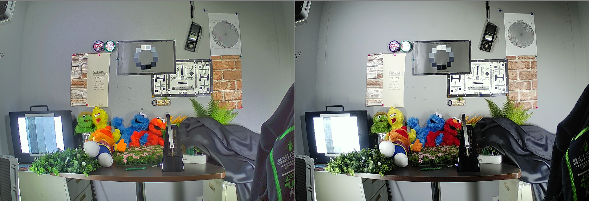
Figure 1: HDR On / HDR Off
HDR的调整首要着重在画面亮度的分配，如何在8-bit 0~255的范围里挤入最多想要的信息。所以首先我们会从AE的设定开始讲起，接着切入与亮度分配有关的HDR/WDR调整，最后再到NR/Edge的搭配以及一些常见问题的处理方式。
-
Compress HDR
Compress HDR是由Sensor端就合成出HDR，仅由一张影像由ISP调整动态范围。
此方式决定权在于Sensor端，而ISP端仅能透过Sensor特性来发挥HDR效果：
-
可以借由降低原本的AE Target数值（建议可降至原本的¼ or ⅓）；
-
透过WDR -- GlobalDarkToneEnhance or WDR Curve参数来决定暗区亮度要提升多少。
-
1.1. AE 设置¶
HDR mode透过长短曝光两张合成的方式，让原本单张容易过曝的区域用短曝光的影像来合成，进而获取到长曝原本过曝区的信息，所以长、短两张的曝光比例（HDR Ratio）便直接关系到了HDR的动态范围大小。
然而HDR Ratio却并非愈大愈好，短曝的影像必须乘上HDR Ratio的比例后才能在线性上和长曝的影像匹配，所以HDR Ratio的比例愈大，乘上的gain也就愈多，影像noise的问题也就愈大。
在AE的环节我们主要需要决定三个参数：
-
Max Short Shutter
-
HDR Ratio
-
AE Target
Max Short Shutter 与sensor运作的fps及频率有关，可由sensor specification中推算出此项的最大限制，建议就设为最大值。
可通过启动camera open之后的log中会有提供当前sensor driver内的gain/shutter/fps等信息，如下图：
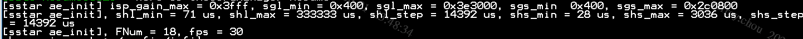
-
isp_gain_max ：ISP gain的最大值
-
sgl_min / sgl_max ：长曝sensor gain的最小值/最大值
-
sgs_min / sgs_max ：短曝sensor gain的最小值/最大值
-
shl_min / shl_max ：长曝sensor shutter的最小值/最大值 (μs)
-
shl_step ：长曝sensor - 1 line的所需时间 (ns)
-
shs_min / shl_max ：短曝sensor shutter的最小值/最大值 (μs)
-
shs_step ：短曝sensor - 1 line的所需时间 (ns)
HDR Ratio 需视场景的动态范围需要来决定，但必须要注意的是HDR ratio决定的是HDR效果的 “最大” 动态范围，而实际画面的动态范围还会受后面WDR内的Global Dark Tone Enhance设定所影响，所以建议不一定要追求很高的HDR ratio，而过小的Ratio又会限制到长曝的曝光时间导致长曝张提早拉gain而带来noise问题，一般我们建议设为10x (= 10240)，亦可支持16x (= 16384)。
AE Target 控制画面的整体亮度，通常设成和单张Linear mode相同即可。如果WDR等都调过后觉得最终HDR效果暗区noise有些不好控制，可以适当调高一些target让AE协助将画面拉亮，noise效果会比用WDR拉亮的小。
- 依照sensor specification及fps计算出短曝的最长、最短曝光时间后分别填入短曝的曝光表中。然后将欲使用的HDR Ratio填入HDR Ratio的字段中，横轴为by total gain可设定相同的HDR ratio [尚未支持动态改变HDR Ratio机制]。
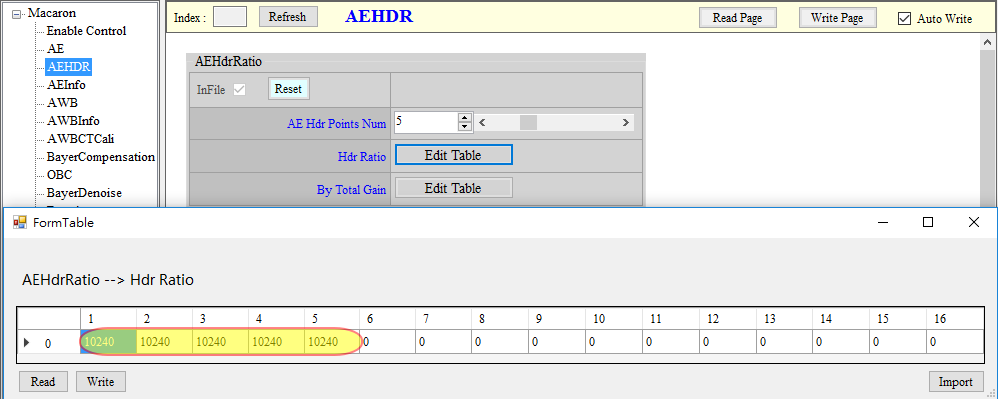
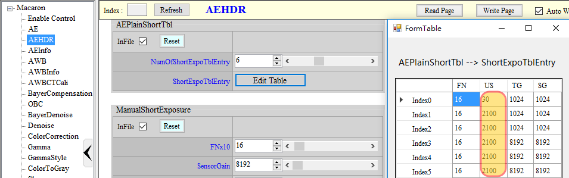
- 依照HDR Ratio，将短曝曝光表中的Shutter乘上HDR Ratio后填入长曝曝光表中（ex：短曝2100μs、长曝21000μs）。
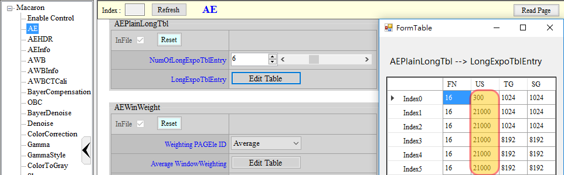
1.2. HDR 设置¶
HDR API中包含各项基本的HDR参数设定，其中SensorExpRatio需参照前项AE章节中的HDR ratio进行设置，其余参数功能介绍如下：
| 参数 | 功能介绍 |
|---|---|
| YwtTh1及YwtTh2 | HDR合成中长短曝选用的上下界： 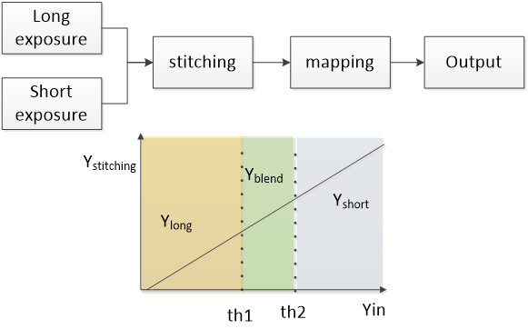 th1以下的亮度会选用长曝影像数据，th2以上则选用短曝，th1与th2之间则会采用长、短曝blending的方式（限制：th2 > th1）。 调整上可先将th2设0，然后改变th1直到尽量高，可是画面中没有因长曝饱和而颜色偏差的位置（批注1）。 th1决定后，th2建议设为th1 + (50 ~ 100) 之间的数值，如th2设得很大，则对亮区的noise表现会有帮助，但同时也代表着细节会流失（blending到已过曝无细节的长曝）。 |
| NoiseLevel | Noise level，用于判断动静。 横轴为亮度，值越大越容易判断为静。 只用默认值即可，如果需要可依据默认值来微调。 |
| YSrcStr | Fusion by luma的亮度值再与 max(R,G,B) 混合的强度。 值越大 max(R,G,B) 混合越多。 YSrcStr[0]为长曝强度，YSrcStr[1]为短曝强度。 |
| NrStr | 针对短曝的降噪强度。 值越大降噪越强。 |
| NrPreStr | 针对短曝的前置降噪强度。 值越大前置降噪越强。 |
| NrYTh1 | 降噪的最低亮度门阀。 Th1以下亮度使用完整降噪。 |
| NrYTh2 | 降噪的最高亮度门阀。 Th2以上亮度不使用降噪。Th1至Th2之间为blending方式。 |
| NrYGain | 根据亮度差值控制降噪强度纵轴。 值越小降噪越强，1倍为16。 |
| NrYSft | 根据亮度差值控制降噪强度横轴。 控制每个节点的间距，值域：0 ~ 7，为2的幂次方。 |
| NrKernelStr | 降噪Filter强度。 值越大降噪越强，值域：0 ~ 7。 |
| NrKernelStrWei | 降噪Filter混合权重表。 值越大降噪越强。横轴为与中心点的差异，纵轴为权重，正常情况下，差异越小权重设越大，值域：0 ~ 31。 |
| MoLuBlendSft/Y | Fusion by luma 与 Fusion by motion的混和比例表。 以motion信息去查此表，得到代表fusion by motion的blending weight。 横轴为静到动，纵轴为混合比例，值越大采用fusion by motion结果的比例越高。 MoLuBlendSft控制每个节点的间距，值域：0 ~ 7，为2的幂次方。 MoLuBlendY控制每个节点的weight，值域：0 ~ 256。 |
| MotAdjSft1 | fusion by motion长曝比例表1横轴。 横轴为亮度，越右边越偏亮，值域：0 ~ 7，为2的幂次方。 |
| MotAdj1 | fusion by motion长曝比例表1纵轴。 横轴为亮度，纵轴为混合长曝比例。 值越大，使用长曝越多；值越小，使用短曝越多，越脏但可以减轻鬼影。 |
| MotAdj2 | fusion by motion长曝比例表2纵轴。 横轴为静到动，纵轴为混合长曝比例。 值越大，使用长曝越多；值越小，使用短曝越多，越脏但可以减轻鬼影。 建议不论动静区都尽量使用长曝为主。 |
| MotAdj3 | fusion by motion长曝比例表3纵轴。 横轴为静到动，纵轴为混合长曝比例。 值越大，使用长曝越多；值越小，使用短曝越多，越脏但可以减轻鬼影。 建议不论动静区都尽量使用长曝为主。 |
1.3. HDR EX设置¶
| 参数 | 功能介绍 |
|---|---|
| DynRatioEn | 动态长短曝亮度补偿 如果sensor长、短曝的实际亮度差与SensorExpRatio设定的数值有差异，则开启动态补偿功能可在一定程度内弭平这个差异（ex：长、短曝shutter计算因精度问题无法刚好是指定倍数时，开启此功能可消弥这个误差）。 |
| NrEn | 针对短曝的额外降噪 开启可让短曝影像变干净，但需注意是否有模糊问题。 |
| SensorExpRatio | 长短曝亮度比 正常状况下需填与AE章节中的HDR Ratio相同之数值。 |
| DynRatioSrcSel | 动态长短曝亮度补偿的参考张选择 0：长曝、1：短曝。 |
| YSrcSel | fusion by luma亮度来源 fusion by luma会依据当前亮度（Yin）和YwtTh1、YwtTh2来决定长短曝的比例。 0：长曝、1：短曝。 |
| NoiseLevelSrcSel | NoiseLevel亮度来源 NoiseLevel会依据亮度来查表，亮度可以透过4种方式获得。 0：长曝、1：短曝、2：长短曝较小值、3：长短曝较大值。 预设为3，不建议调整。 |
| MotionMaxVal | 运动程度上限值 motion信息会再卡此上限值，值越小，上限值越小，则小差异会被判断成较大的移动，所以越容易把噪声当动区，进而使用较多短曝，导致较脏。 预设为7，不建议调整。 |
| MotionAdjSft2 | fusion by motion长曝比例表2，fusion by motion长曝比例表3横轴。 横轴为motion强度，也就是静到动，值域：0 ~ 7，为2的幂次方。不建议调整。 |
批注1： 因为AWB gain apply的位置在HDR合成前，故长曝影像饱和的位置常会出现各种异常色彩但不一定是白色的状况，共同的特色是会细节丢失，故需要向下调整th1来避免过曝的长曝区段出现在最终的影像中。
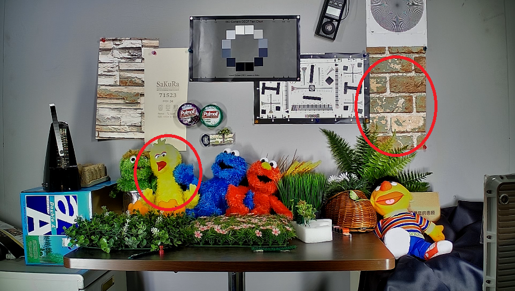
1.4. WDR调整¶
长、短曝两张影像经过HDR在16-bit的空间里合成之后，会再经过WDR的Global Dark Tone Enhance来重新进行亮度分配并下降为12-bit，一般我们需透过Global Dark Tone Enhance来将画面中原本属于长曝的暗区数据拉亮或是还原到正常单张应有的亮度，仅中高亮或过曝区透过曲线把短曝张的信息整合进来。
Global Dark Tone Enhance预设有16条curve可供选择，0是维持线性不做亮度提升的曲线，随着数字上升拉亮的程度会逐渐增加。如果调整Global Dark Tone Enhance后仍有暗区不够亮的情形，此时可尝试再搭配调整主Gamma来将暗区提亮。
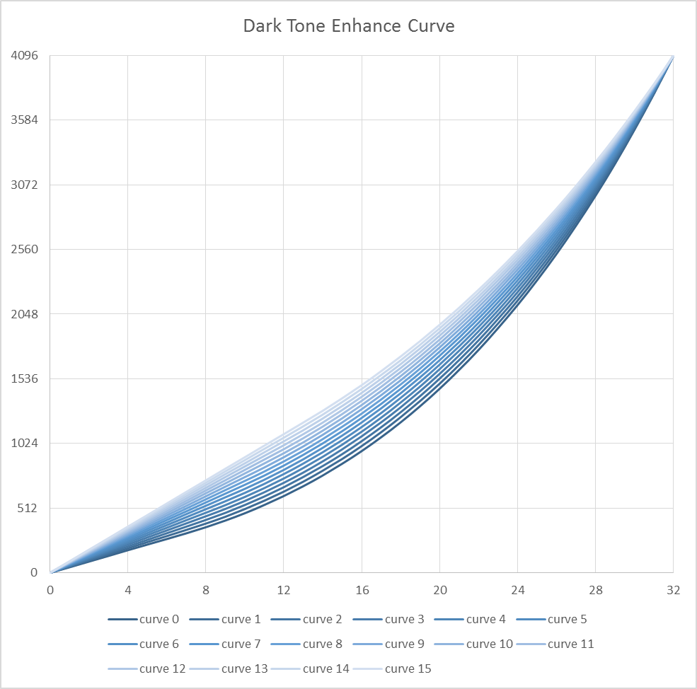
WDR的调整参数列表说明如下：
| 参数 | 说明 |
|---|---|
| GlobalDarkToneEnhance | 全局的暗处增亮曲线 共16条默认的曲线可供选择，详情可再参考本章节前半段的说明。 若开启WDRCurveFull Curve2，则GlobalDarkToneEnhance会失效。 |
| WDRStrByY | WDR blending强度控制by Y 可依照画面中不同的亮度位置来控制WDR blending主路的强度，表格由左至右分别对应由暗至亮的区块，建议在预设的基础上视需要微调即可。 |
| Strength | WDR blending整体强度 HDR模式下此项无效，固定255，使用主路的结果。 如果要降低强度可使用WDRStrByY。 |
| DarkLimit | 暗区拉亮强度限制 当调整完WDR其他参数后，如果有暗区拉亮导致的不良反应出现如色彩异常、noise 过大等，可尝试调整DarkLimit设定，透过限制暗区拉亮的程度来减轻不良反应的问题。 |
| BrightLimit | 亮区拉暗强度限制 同上方DarkLimit的用法，惟改为限制亮区。 |
| DeSatSrcSel | 去色彩功能的亮度来源 0代表过完Curve1的亮度，1代表过完global tone的亮度，2代表未经过WDR处理前的亮度，建议使用1。 |
| DeSatCrEn | 去色彩功能的独立设定Cr色域开关 0为Cr色域不独立设定（DeSatCrLut无效），Cr使用与Cb相同设定，1为Cr色域独立设定。 |
| DeSatCbLut | 依据亮度调整Cb色域去色彩功能的程度 横轴为亮度，越右边越偏亮，纵轴为色彩增益（128 = 1x），值越小则去色彩越强，影像越偏灰。如果有暗区拉亮导致的色彩异常、色彩noise，可调小暗区数值。 |
| DeSatCrLut | 依据亮度调整Cr色域去色彩功能的程度 同上方DeSatCbLut的用法，惟改为Cr色域。 |
| WDRCurveFull | 全局的暗处增亮曲线 提供手动控制WDR的三条曲线。 Global Tone：对主路源做增亮的curve。 Curve1：对旁路源做增亮的curve。 Curve2：对WDR输出做增亮的curve，功能同GlobalDarkToneEnhance。 |
通过Global Dark Tone Enhance将画面亮度整体拉亮后，通常会出现对比度差、通透性不足的问题，此时可适当增加一些LTM（Local Tone Mapping）的效果来提升层次感。
WDR LTM的调整参数列表说明如下：
| 参数 | 说明 |
|---|---|
| LocalStrength | Local tone mapping kernel强度 Local tone mapping整体强度，建议设满255。 |
| LevelStrength | Level强度 值越大亮暗区contrast加强效果越强，建议设满255。 |
| Coarse.BoxNum | Coarse中local分析的尺度 Coarse代表分析画面时会参考较大的区域范围，反之Fine代表分析画面时会参考较小的区域范围。 数字设越大分析的尺度越小，可关注越小范围的亮度优化；而尺度设大整体画面较自然。建议设最大值4。 不建议by iso变动，因会导致闪烁问题。 |
| Coarse.FltCoef | Coarse filter强度 值越大local contrast加强效果越明显，但物体边缘越容易出现光晕。 建议设最大值4。 |
| Coarse.ToneMapStr | Coarse local tone mapping强度 值越大local contrast加强效果越明显，但物体边缘越容易出现光晕。 建议设最大值255。 |
| Fine.BoxNum | Fine中local分析的尺度 Coarse代表分析画面时会参考较大的区域范围，反之Fine代表分析画面时会参考较小的区域范围。 数字设越大分析的尺度越小，可关注越小范围的亮度优化；而尺度设大整体画面较自然。建议设3或2。 不建议by iso变动，因会导致闪烁问题。 |
| Fine.FltCoef | Fine filter强度 值越大local contrast加强效果越明显，但物体边缘越容易出现光晕。 建议设1。 |
| Fine.ToneMapStr | Fine local tone mapping强度 值越大local contrast加强效果越明显，但物体边缘越容易出现光晕。 建议设128或以下。设太大时可能会有渐层分层现象。 |
1.5. NR调整¶
HDR模式下多了短曝NR可以调整，在此章节会介绍NR的快速调整流程：
-
手动AE
调整gain值至要调整的倍率。
-
切换HDR到纯短曝输出，观察短曝状态：
HDR页面切为manual，YwtTh1 = 0，YwtTh2 = 0，MoLuBlendY整列填0。
-
调整短曝OBC
-
先填好正确的短曝OBC。
-
来回切换HDR正常合成 <-> 纯短曝输出（HDR页面auto <-> manual），观察合成区是否有色差。
-
如果有，微调短曝OBC，尽量让合成区没有色差。
-
-
调整短曝NR
-
来回切换HDR正常合成 <-> 纯短曝输出（HDR页面 auto <-> manual），观察合成区是否有噪声。
-
如果有，调强短曝NR，NrStr优先，NrPreStr次要，不要调太强会伤短曝区细节。
-
-
调整3DNR
-
HDR正常合成。
-
打开debug mode，调整Md.Thd、Md.ThdByY、Md.Gain、Md.GainByY，让画面整体接近亮灰色，通常会看到某个亮度以上时是合成区和短曝区，会因为噪声较大偏动（黑色），尽量调到亮灰色。
-
-
调整NR Luma Adv
-
HDR正常合成。
-
打开debug mode，调整EdgeThbyLuma，让画面细节区为白色，弱细节区域为灰色，要抹干净的区域才为黑色。
-
打开debug mode，人走动或挥手，调整EdgeThbyMot，尽量让动区不要全黑，为均匀的亮灰色。
-
关闭debug mode，人走动或挥手，观察动静区，画面噪声与细节的平衡，调整SF3_StrByLuma、SF3_StrByMot。
-
-
回步骤1，调整其他gain值。
2. 常见问题¶
2.1. Flicker¶
HDR模式下由于短曝光shutter往往受限无法达到de-flicker的最短物理限制，故短曝光区在阴极射线管光源下常无可避免会出现Flicker问题，此时建议只能调整fps到与电源频率成倍数的fps张数来让banding问题定住而不滚动（ex: 60hz/30fps、50hz/25fps），目前尚无法根除这个问题。如下图所示：
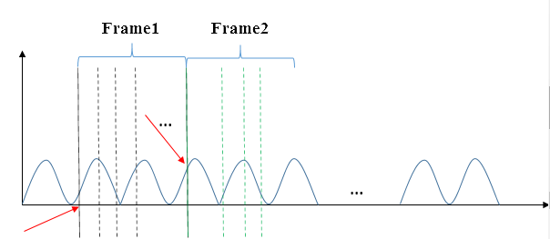
当flicker与fps未对齐时，会看到banding滚动现象。
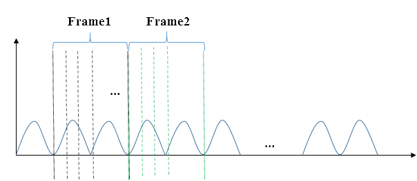
当flicker与fps有对齐时，会看到banding定住现象，但banding现象无法根除。
当HDR于短曝影像上出现banding现象时，建议调整方式：
-
MoLuBlendY全部设256，使用fusion by motion的结果
-
MotAdj2, MotAdj3全部设256，fusion by motion采用长曝
-
MotAdj1最亮的节点设小采用短曝，其余设256采用长曝
-
NoiseLevelSrcSel设3
-
NoiseLevel调小
-
YwtTh1, TwtTh2尽量设大，例如900, 950
HDR静态区贴短曝影像有banding & HDR静态区贴长曝影像无banding现象：
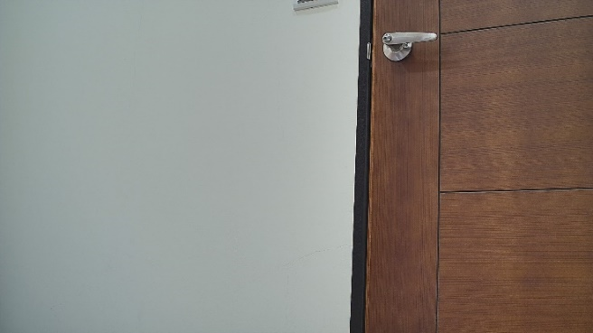
2.2. 长短曝融合区破碎状的闪动¶
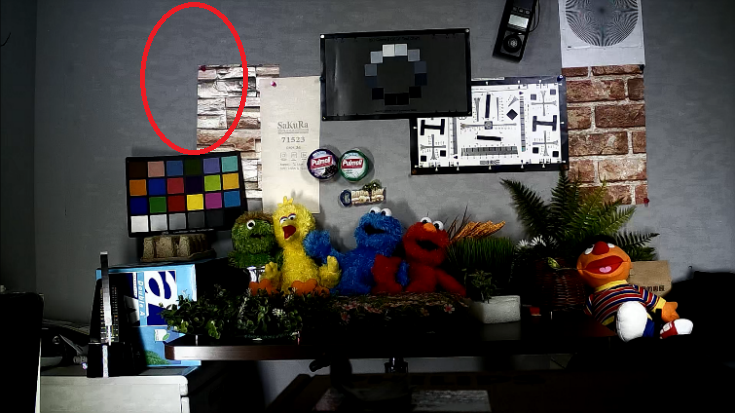
此问题多由长、短曝光张亮度不匹配所导致，建议可先check AE中的HDR Ratio与HDR API中的SensorExpRatio两边设定是否一致，或者关闭Dynamic Ratio的动态补偿机制以及调整MoLuBlendY全部设为0不考虑Motion的变动，最后让长、短曝光合成完全只参考YwtTh1及YwtTh2的设定，并观察长、短曝光交界处是否存在明显的边界，从而厘清是否确实有两张亮度不匹配的问题。
-
验证Sensor – Gain/Shutter是否线性匹配以及检查Long & Short – Gain/Shutter是否符合HDR Ratio比例。如何判断Sensor是否线性匹配的验证方式，使用单一场景（非复杂场景）且光源环境为固定，将AE切至manual mode，先调整shutter由小至大观察长、短曝影像亮度是否呈现线性变化（最大值需确保画面亮度尚未过曝）；相同的步骤再调整Sensor Gain由小至大观察长、短曝影像亮度是否呈现线性变化（最大值需确保画面亮度尚未过曝），最终得到长、短曝影像亮度都呈现线性变化且比例符合HDR Ratio数值时，则可以判断sensor的亮度输出为正确。
-
确认linear mode & HDR mode时，设定相同的gain & shutter得到的亮度是否接近符合
-
上述两步骤都确认过，实际得到的gain/shutter依然有不线性时，则可以透过HDR的DynamicRatio来进行补偿，如下图（左图：灯源周围亮度不线性；右图：透过HDR参数进行补偿）：
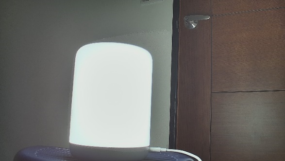
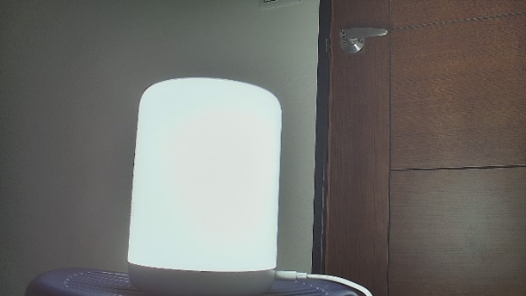
DynamicRatio = Disabled & DynamicRatio = Enabled
2.3. 中高亮度局部色彩异常且细节丢失¶
解决方式：尝试调低HDR API中YwtTh1的值。
2.4. 室内／室外／背光人脸过暗¶
可尝试以下建议，依序调整：
-
将GlobalDarkToneEnhance调大，值越大暗处越亮，但整体越蒙。
-
调整WDRCurveFull的Global Tone，将暗处拉亮，但noise会变多。
注意，当亮暗拉太开时，反而会让LTM效果变差。
-
拉高AE target，但可能会牺牲室外过曝区细节。
-
Fine.BoxNum不要设太多，虽然设大会让整体对比感较好，但相对暗的人脸会更暗。
-
WDRStrByY暗处不要调太小，如果有需要限制暗区拉亮程度，可以调整DarkLimit。
2.5. HDR当出现鬼影时，选用长曝光、短曝光影象补偿的差异¶
当选择长曝光为主时，则运动物体区域呈现移动较模糊、较少的鬼影现象（下左图）。
当选择短曝光为主时，则运动物体区域呈现移动较清楚、较多的鬼影现象（下右图）。
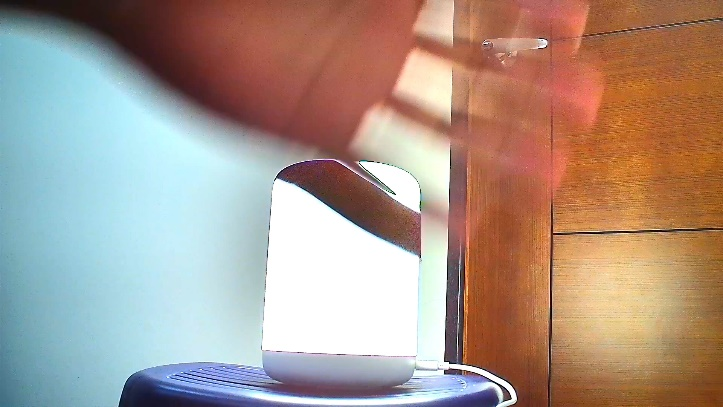
HDR运动区域选长曝光为主 & HDR运动区域选短曝光为主